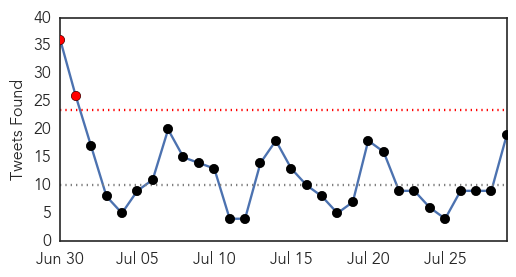
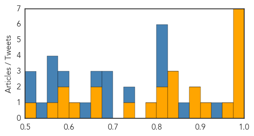
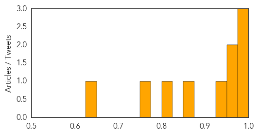

Ebola
30-Day Web Trend
3 alerts, 0 warnings

30-Day Twitter Trend
2 alerts, 0 warnings

Article Locations

Article Confidences
Top Articles:
- 0.999
- Fauci tries to calm US after missteps on Ebola, amid concerns Americans have ...
- 0.999
- The Hype virus and Ebola – which one will get you first?
- 0.999
- Ebola cases fall to year low but WHO warns of trouble ahead
- 0.998
- We Have to Finish the Job Says MSF of Ebola Crisis
- 0.994
- Ebola cases fall to year low
- 0.986
- American National Successfully Treated for Ebola
- 0.980
- How West Africa is ramping up food security after Ebola outbreak
- 0.959
- ‘Ebola must be stopped, and now ! !’–NATCOM Commissioner says in the Gambia
- 0.924
- Ebola Fueled by Distrust
- 0.897
- Hero Doctor Survives Ebola Epidemic
- 0.882
- Dr. Kent Brantly Recalls Experience of Surviving Ebola Infection in New Book, Issues Appeal for Helping West Africa
- 0.847
- the Agroeconomic Origins of the Ebola Outbreak
- 0.837
- UNICEF Liberia EVD Situation Report, 22 July 2015 - Liberia
- 0.831
- The Global Health Security Agenda
- 0.823
- Kenyan Startup Echo-Mobile partners IBM and Airtel to track Ebola in West Africa - Kachwanya.com
- 0.816
- LCP, PREVAIL launch awareness on Ebola Vaccine Study
- 0.782
- Vaccines If Not Perfect Might Pave Way For Super Bugs
- 0.730
- The physician "brain drain" from sub-Saharan Africa to the US
- 0.673
- Celebrating Stella Adadevoh
- 0.663
- ‘Save Nigerians from prion disease’
- 0.605
- Prez. Sirleaf Aches For Unity, Service To Nation
- 0.598
- Anthrax: tracing and containing the threat
- 0.576
- Sierra Leone Ebola Situation Report, 22 July 2015 - Sierra Leone
- 0.572
- Wikileaks publishes million confidential emails (and … – Il Sole 24 Ore
- 0.502
- Amaechi’s role in freeing Nigeria of the polio scourge
Top Tweets:
- 0.969
- Socioeconomic Impacts of the Ebola Virus Disease on Africa http://t.co/hJ27eqeIPq
- 0.957
- Rapid Ebola test could play key role in efforts to end lingering outbreak - Medical Xpress http://t.co/HPnPld13bE ebola EVD
- 0.949
- Ebola numbers drop sharply in Guinea, Sierra Leone - CIDRAP http://t.co/VZHbT9Fx8J ebola EVD
- 0.946
- RT: AfricaStopEbola Concours de Chant en Guinée pour lutter contre Ebola https://t.co/GHhJhTPJIk
- 0.935
- RT: Ebola response still flawed. Paperwork should never cost lives! Ebola Liberia
- 0.909
- UHAS commended for undertaking Ebola vaccine trial - GhanaWeb http://t.co/S6tZizdhzX ebola EVD
- 0.890
- Ebola Virus Disease: Experience and Decision Making for the First Patients outside of Africa http://t.co/bbbGDEX9bA
- 0.881
- How many health workers have been lost due to Ebola crisis in West Africa? http://t.co/jFGAl1rRMC Africaagainstebola
- 0.875
- Ebola: 'Isn't that over yet?' - BBC News http://t.co/LOffmd0VJV ebola EVD
- 0.864
- Report: Ebola Fueled by Distrust - Voice of America http://t.co/J0Izph8KZ7 ebola EVD
- 0.855
- The Ebola outbreak is 1.5 yrs old & we're all getting inured. But I gotta say this: The numbers are unthinkable! 27784 cases, 11294 deaths
- 0.846
- Ebola : une opportunité pour les systèmes de santé ? http://t.co/K4AfpMLpl1
- 0.843
- Foreigner forced out of Samoa after ebola concern - Radio New Zealand http://t.co/z7pYxrDbSv ebola EVD
- 0.829
- Indy native chronicles struggle to survive Ebola - WRTV Indianapolis http://t.co/F6Mm1GnQ3G ebola EVD
- 0.813
- The African Private sector registered the Africa Against Ebola Solidarity Trust to manage funds raised to fight Ebola Africaagainstebola
- 0.798
- Liberia. Surviving Ebola: Public perceptions of governance and the outbreak response http://t.co/iAaZr5WDhu
- 0.790
- Ebola cases fall; new positive in Sierra Leone's Tonkolili; report details trust gap in Liberia: the weekly summary http://t.co/r0vifmU0tl
- 0.750
- Grande Finale Africa Stop Ebola ce soir à Conakry en présence de Tiken Jah Fakoly, Mory Kante et BANLIEUZ'ART... http://t.co/ccbsGMKfs3
- 0.748
- Brantlys speak about Ebola experience at library - WISH-TV http://t.co/LaejGjqpsb ebola EVD
- 0.731
- RT: Aujourd’hui, c'est la grande finale du concours AfricaStopEbola à Conakry. Combattre Ebola en musique Guinee http://…
- 0.709
- Dealing with African epidemics needs more than just a health response ebola http://t.co/pf9ZZzIFmb
- 0.683
- Les photos de la demi-finale Africa Stop Ebola hier soir pour vous faire patienter jusqu'eux photos de la grande Finale et... du gagnant !
- 0.676
- Et voici les 5 candidats retenus pour participer à la Grande Finale du concours de chant Africa Stop Ebola ce... http://t.co/G6Bol57iOk
- 0.663
- Ebola doctor back in Indy to share amazing story of survival - Fox 59 http://t.co/pM1hSWDfRC ebola EVD
- 0.654
- Addressing therapeutic options for Ebola virus infection in current or future outbreaks http://t.co/9DdGaq7Fta
- 0.633
- FoodSecurity After Ebola http://t.co/M5cbFnAOe9
- 0.620
- Point-of-care diagnostics for Ebola - http://t.co/A9wAAOLz1c http://t.co/LcConh6oev ebola EVD
- 0.620
- Guinée : les finalistes d’Africa stop Ebola connus mercredi http://t.co/QMsavLaJXO AfricaStopEbola Conakry
- 0.607
- RT: Ebola numbers drop sharply in Guinea, Sierra Leone http://t.co/9RbZDbmGEB
- 0.607
- Good news on the Ebola front: @WHO says there were only 7 cases reported in the wk ending July 26. None in Liberia. http://t.co/MhTwEP2dsb
- 0.603
- Guinée Evaluation sur les services de santé génésique, maternelle, néonatale, et infantile ebola http://t.co/ut4pYXvBox
- 0.599
- RT: 'Isn't that over yet?' Report on West African Ebola outbreak current situation (photo: BBC) http://t.co/y6CWwCVgtM http://t.c…
- 0.572
- RT: Découvrez les 5 candidats sélectionnés pour la Grande Finale ! Africa Ebola Guinee Conakry http:/…
- 0.559
- RT: The recent case in Tonkolili shows that adequate IPC and triage in health facilities is critical to limiting Ebola infecti…
- 0.555
- Guinea. Ebola Impl for routine reprod, maternal, newborn, and child health Serv Del and Utilization http://t.co/WeDPzkIcJQ
- 0.545
- Together we can defeat Ebola Africaagainstebola https://t.co/iP9M4iX7Xc
- 0.518
- Découvrez les 5 candidats sélectionnés pour la Grande Finale Africa Stop Ebola qui aura lieu ce soir à Conakry !... http://t.co/oSGXzCl1ni
- 0.517
- A Case for External DebtCancellation for Ebola Affected Countries http://t.co/VQEqNwJeyY
West Nile Virus
30-Day Web Trend
8 alerts, 3 warnings

30-Day Twitter Trend
0 alerts, 0 warnings

Article Locations

Article Confidences
Top Articles:
- 0.992
- Lakewood resident first 'probable' West Nile Virus case
- 0.978
- Hillsborough advisory issued for West Nile encephalitis virus
- 0.977
- Lakewood resident is Ohio’s first case of West Nile virus
- 0.973
- Lakewood resident could be Ohio's first 2015 case of West Nile virus
- 0.954
- City of Sugar Land
- 0.927
- City mosquitoes test positive for West Nile
- 0.854
- Pork linked to Washington salmonella outbreak, food safety emphasized
- 0.824
- Commissioners remind public of mosquito abatement program
- 0.752
- Washington County woman has West Nile Virus, first human case in Idaho this summer
- 0.629
- WATCHFUL MOSQUITO EYES: Edwardsville, Alton officials monitor and treat areas for West Nile Virus prevention
Top Tweets:
-
No tweets found for Jul 29, 2015